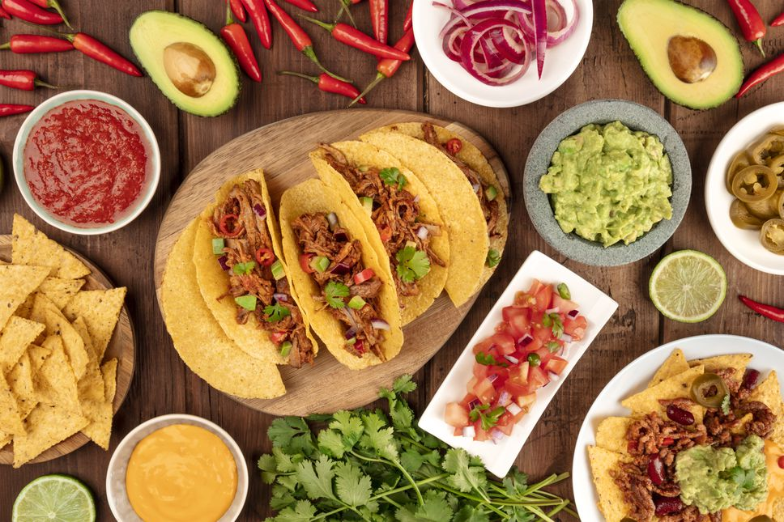
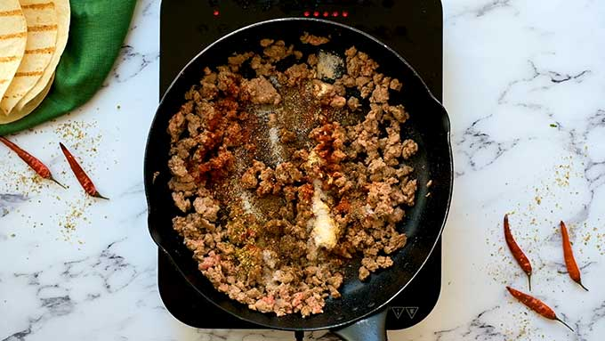
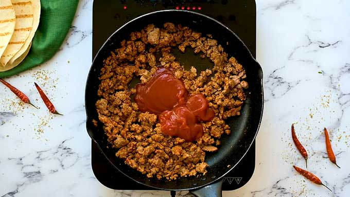
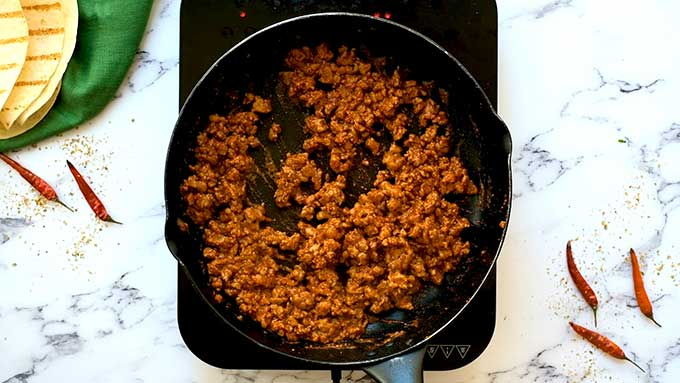

Tacos

Description
Ground beef tacos in a crispy corn shell or a soft flour
tortilla, with lots of toppings. This recipe uses a flavorful
homemade taco seasoning.
Ingredients
- 1 lb. 90% to 93% lean ground beef
- 1 Tablespoon chili powder
- 1 teaspoon ground cumin
- 3/4 teaspoon salt
- 1/2 teaspoon dried oregano
- 1/2 teaspoon garlic powder
- 1/4 teaspoon ground black pepper
- 1/2 cup tomato sauce
- 1/4 cup water
- 12 taco shells - either hard shells or small
6-inch soft flour tortillas will work
- Optional Taco Toppings: shredded cheese shredded lettuce,
chopped tomatoes, diced red onion, taco sauce, sour cream,
guacamole, etc.
Steps
- Break apart lean ground beef in a skillet over medium-high
heat.
- Add chili powder, cumin, salt, oregano, garlic powder,
and pepper.
- Cook until the beef is browned.

- Add tomato sauce and water to the meat.

- Cook until some liquid has evaporated, but the meat is
still saucy.

- Spoon 2 tablespoons of the taco meat into hard taco shells
or small soft tortillas.
- Top the tacos with your favorite traditional taco toppings.